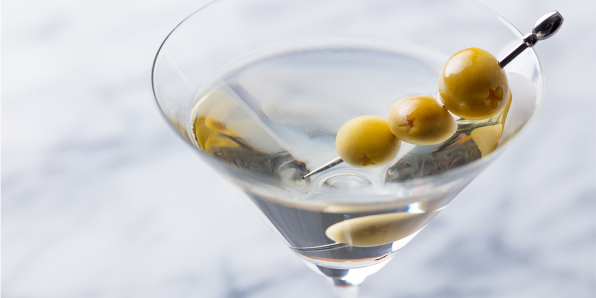

Dry martini

Description
The martini is a cocktail made with gin and vermouth, and garnished with an olive or a lemon twist.
Over the years, the martini has become one of the best-known mixed alcoholic beverages.
Ingredients
Yield for 1
- 70 grams gin
- 15 grams dry vermouth
- 1 dash orange bitters
- lemon twist for ganish
Preparation
- Add the gin, dry vermouth and orange bitters into a mixing glass with ice and stir until very cold.
- Strain into a chilled cocktail glass.
- Garnish with a lemon twist.
Recipe list